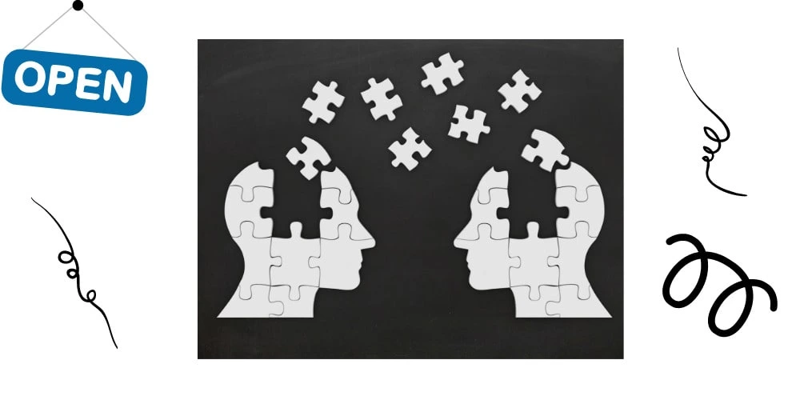

A negative working environment may lead to physical and mental health problems, harmful use of substances or alcohol, absenteeism and lost productivity. Workplaces that promote mental health and support people with mental disorders are more likely to reduce absenteeism, increase productivity and benefit from associated economic gains. Our mental health determines productivity. Smart managers know this. Below we will break down workplace risks to poor mental health. We will also share our self-help mental health tips for work.

How Our Mental Health Determines Productivity
According to the World Health Organization, there are plenty of ways Mental Health Determines Your Productivity
Each day we wake, we are faced with new challenges and the only thing that holds us is our strength to survive through the struggles of life. But does life have to be a struggle? Mental health experts say that a person’s mental health can definitely play a huge role as a determining factor, that can affect one’s productivity.
According to World Health Organization, there is an estimate of 264 million people who daily suffer from depression due to disability. It is costing the global economy a whopping $1 trillion due to loss of productivity.
Risks to mental health include:
- Inadequate health and safety policies at work.
- Poor communication and management practices from higher up management.
- Limited participation in decision-making. Having low control over one’s area of work.
- Lacking employee support. This could be both informal or through a structured program.
- Inflexible working hours
- Unclear tasks or organizational objectives.
Plenty of factors comes into play when productivity at the workplace comes into the table of discussions. Take for instance work. Work, in general, is a good way to increase one’s self-confidence and self-worth.
Whatever the job may be, it helps a person’s mental health to maintain a certain level of productivity. However, a worker’s mood may also be affected by his or her working environment. A negative or unsafe working environment can lead to physical injuries or serious mental health problems. Fear, agitation, pressure and a toxic working environment can ruin one’s mood, train of thought and “Gana” to perform.
Another factor that can affect one’s productivity at work is energy in the workplace. Though unfortunate, it remains that harassment has a huge effect when it comes to a person’s productivity. There are times when depression can become so severe that a person’s routine becomes affected. Severe depression can demand more than just counselling. Psychiatry can help when it comes to treating severe depression but for those who do not wish to take scripts, one can simply talk to someone who is a professional in the field of psychology.
Mental Health Tips To Boost Productivity
One may not necessarily have to run to a professional for help. A few tips can be observed to save one from grief, despair or depression when having to deal with either toxic people or a toxic workplace, and the following are:
Set achievable goals
You may have heard of setting ‘SMART goals’. The letter ‘A’ in SMART stands for attainable. Having regular small wins is important. Especially when you have perfectionistic or self-critical traits.
Talk about your day
We all need to debrief. Either it’s with a workmate, partner or friend. It helps to get someone else’s opinion. To form a more balanced view.
Set boundaries for ‘me time.’
We all need downtime. A chance to relax. A chance to unwind. Make space for yourself outside of work.
Cut out time-wasters
We all have responsibilities. We have people who depend on us. People who waste our time can be a drag. They sap our energy.
Get your steps up
Exercise, we keep hearing about the benefits. Walking is a low impact exercise. We can talk to a friend whilst we walk. In addition, listening to podcasts or walking the dog will further help relaxation.
Be flexible
Be open-minded. Opportunities to do the above 5 points will come your way. Some days are busy. We might not be able to take a 20min coffee break. Instead, a 10min walk with a coffee in hand might have to do.
Take your breaks
It’s important to take regular breaks. In addition, we must stay flexible. Concentrations drop and we start to get tired. There is a reason why drivers are advised to break every 2 hours.
Stay focused
Our mental health determines productivity. Staying focused when we are working will let us get more done. Then, we can enjoy our breaks.
In conclusion, mental health interventions should be delivered as part of integrated health and well-being strategy that covers prevention, early identification, support and recovery. Occupational health services or professionals may support organizations in implementing these interventions where they are available, but even when they are not, several changes can be made that may protect and promote mental health. The key to success is involving stakeholders and staff at all levels when providing protection, promotion and support interventions and when monitoring their effectiveness.